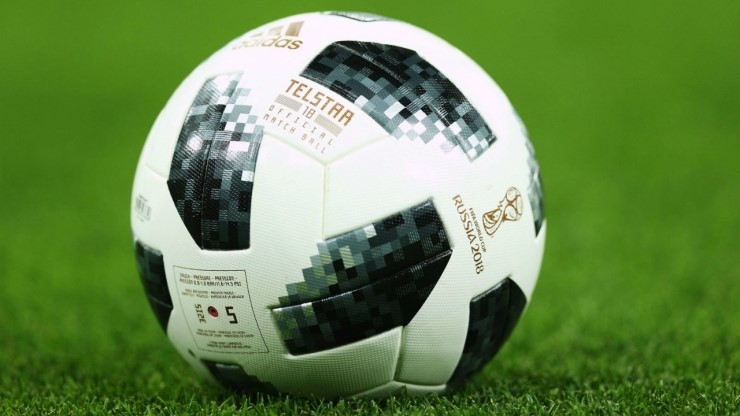

러시아 월드컵 공식 홈페이지
역대 월드컵 우승팀
1위 : 브라질 - 5회
(1958년, 1962년, 1970년, 1994년, 2002년)
2위 : 독일 - 4회
(1954년, 1974년, 1990년, 2014년)
2위 : 이탈리아 - 4회
(1934년, 1938년, 1982년, 2006년)
4위 : 아르헨티나 - 2회
(1978년, 1986년)
4위 : 우루과이 - 2회
(1930년, 1950년)
6위 : 스페인 - 1회
(2010년)
6위 : 프랑스 - 1회
(1998년)
6위 : 잉글랜드 - 1회
(1966년)
(1958년, 1962년, 1970년, 1994년, 2002년)
2위 : 독일 - 4회
(1954년, 1974년, 1990년, 2014년)
2위 : 이탈리아 - 4회
(1934년, 1938년, 1982년, 2006년)
4위 : 아르헨티나 - 2회
(1978년, 1986년)
4위 : 우루과이 - 2회
(1930년, 1950년)
6위 : 스페인 - 1회
(2010년)
6위 : 프랑스 - 1회
(1998년)
6위 : 잉글랜드 - 1회
(1966년)
2018 러시아 월드컵 마스코트
마스코트 : 자비바카(Zabivaka)
2018 FIFA 러시아 월드컵 마스코트는
자비바카(Zabivaka)가 선정이 되었다.
월드컵 마스코트는 대부분 동물을
의인화 하여 제작하고 있는데
이번에는 늑대를 의인화하여 제작 되었다.
2018 러시아 월드컵 공인구
공인구 : 텔스타18

2018 FIFA 러시아 월드컵 공인구는 "텔스타 18"에 대해 소개하고자 한다.
텔스타 18은 과거 1970 멕시코 월드컵 때 사용했던 "텔스타"을 현대적인 디자인으로
재탄생한 공인구라고 볼 수 있다.
2018 러시아 조편성
조편성